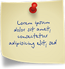
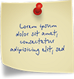

Sampling
Guide
Sampling Techniques for Soil and Plant Tissue
READ MORE
Chemists & Consultants
Sampling
Guide
Sampling Techniques for Soil and Plant Tissue
READ MORE
Analytical Catalog
Please call if you do not see what you need.
READ MORE
Consultation in irrigation management, soil science, plant nutrition, soil fertility, salinity management and soil reclamation is provided. Crop loss claims and crop production problems are investigated. The laboratory provides analyses of soil, water, plant tissue, fertilizer and soil amendments for agricultural, domestic and environmental applications.
Work Days: Depending on backlog, actual working days may vary. The number indicated is the normal number of working days required for sample preparation and analysis after sample is received at the Fresno laboratory. Allow extra time for sample shipment, report preparation and delivery.
30 days. New customers without established credit will be required to pay in advance.
Contact one of our Client Service Specialists for pricing, volume discounts, terms, sample size or containers. QC Documents are available upon request.
Sampling services are available upon request. Sample containers are available at no charge.
After analyses soil/tissue samples stored for 30 days; water stored for 21 days. If needed, samples can be held longer for a monthly fee.
Results in less than normal turnaround time are "Rush". Rush must be authorized by Laboratory Supervisor. 100% surcharge applies in most cases. For 24 to 48-hour turnaround 200% surcharge may result. Weekend/holiday work requires individual quotes.
We are authorized to receive imported soil and plant tissue for analytical purposes. These samples require special handling.
This is a partial list of analytical work; please call if you do not see what you need.